01 · Today / driving
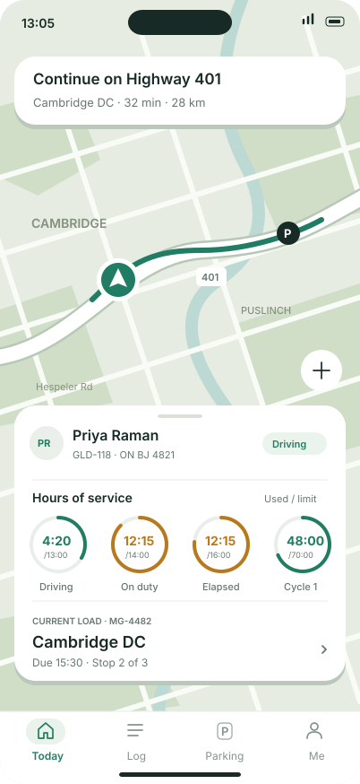
Floating card · HOS status rings · 34 px map gap above navigation

Floating card · HOS status rings · 34 px map gap above navigation
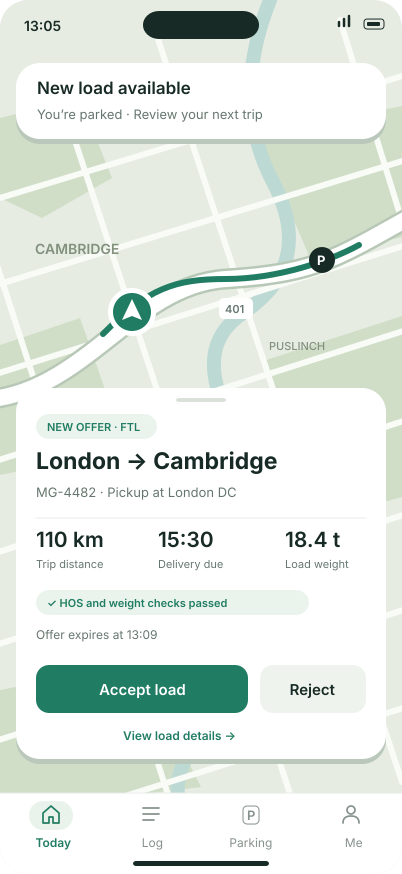
Real accept / reject choice · Compliance result before acceptance
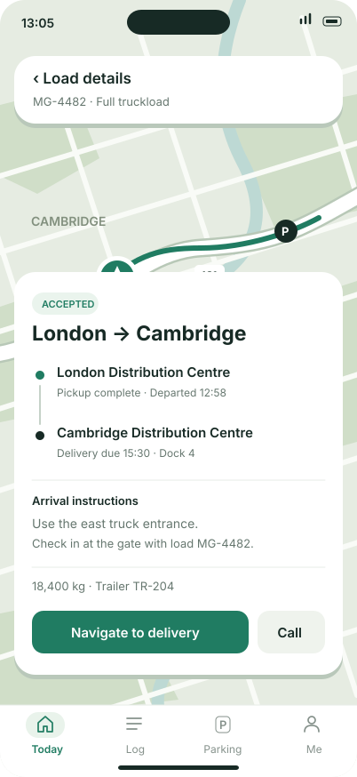
Stops, dock instructions and trip actions without leaving map context
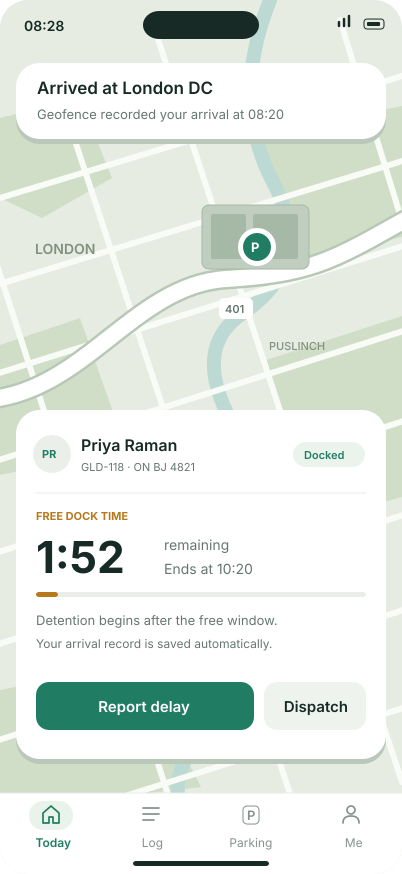
Arrival evidence and free-time countdown · Contextual escalation
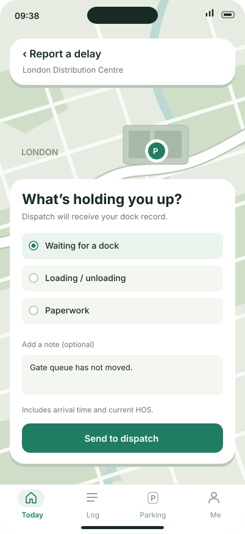
A focused action state with a reason, optional note and explicit send
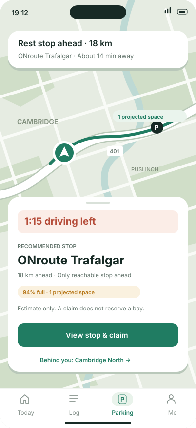
Actionable rest recommendation · Estimates and constraints stay visible
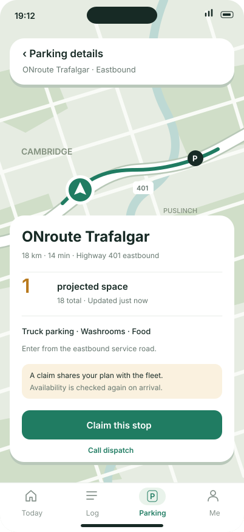
Explain a claim before committing · Facilities and access directions
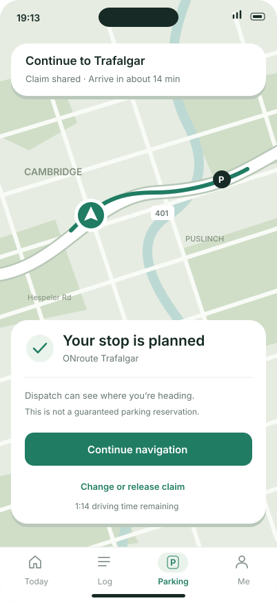
Clear confirmation · Navigation next · Change or release remains available
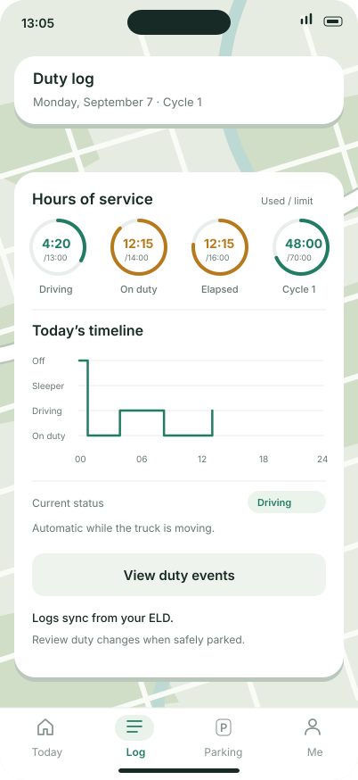
Status rings, a readable duty timeline and ELD-backed events
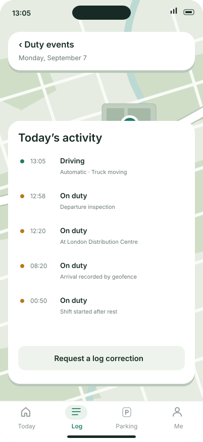
An auditable sequence · Correction request instead of silently rewriting logs
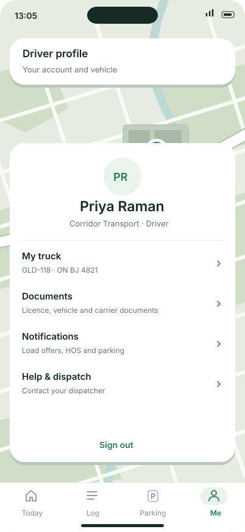
Vehicle, documents, notifications and human support
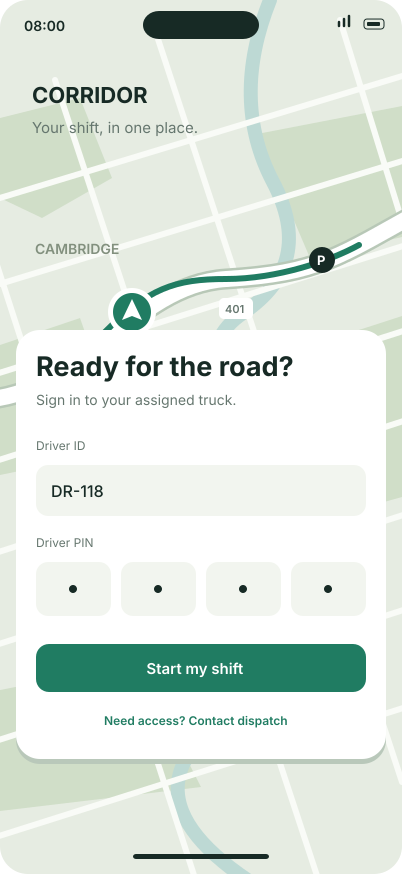
Assigned-truck entry point · The same map and floating-card language